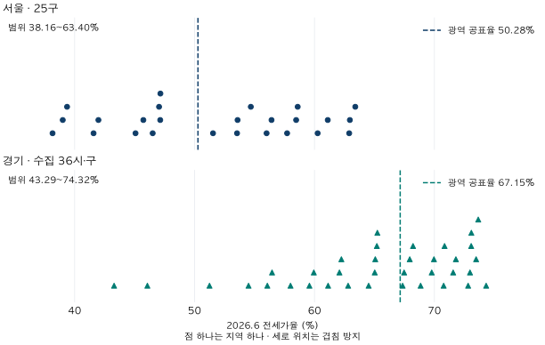
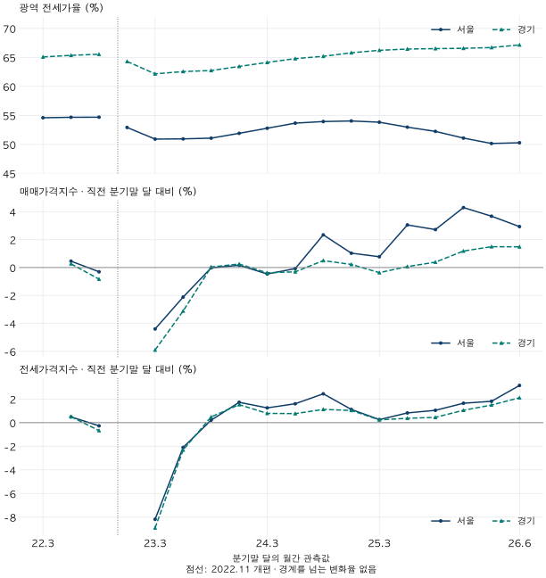
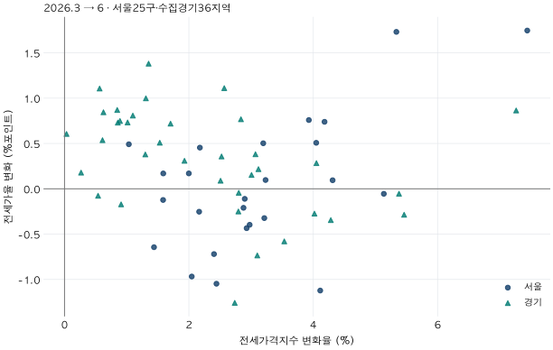

수도권 가격 지도 · 전세가격과 비율
서울·경기 전세가율: 평균보다 지역별 분포를 먼저 보세요
서울25구·수집경기36시·구의 KB 전세가율과 가격지수 변화를 비교합니다. 광역 평균 뒤의 지역별 겹침, 전세가격 상승과 비율 하락의 공존, 표본이 부족할 때 답할 수 있는 범위를 정리합니다.
분석 기간 · 2022.3~2026.6 · 분기말 달18개 | 자료 기준일 · 2026-10-03
경기의 전세가율이 서울보다 높다는 말은 모든 경기 지역에 해당할까요? 2026년 6월 KB 아파트 공표율은 서울 50.28%, 경기 67.15%입니다. 그러나 서울 25구와 수집 경기 36시·구를 펼쳐 놓으면 두 범위는 겹칩니다. 광역 평균은 지역을 살펴보는 출발점이지, 모든 지역의 순서를 정해 주는 규칙은 아닙니다.
서울과 경기의 지역별 전세가율은 겹칩니다
2026년 6월 서울 25구의 전세가율은 38.16~63.40%, 수집 경기 36지역은 43.29~74.32%입니다. 아래 점 하나는 시·구 하나입니다. 지역 규모와 상관없이 한 점으로 표시했으며, 점들의 평균을 광역값으로 계산하지 않았습니다. 점선은 KB가 별도로 공표한 서울·경기 값입니다.

예를 들어 서울 종로구는 56.42%, 경기 성남시 수정구는 54.50%입니다. 경기의 광역값이 높아도, 수정구의 비율은 종로구보다 낮습니다. 이 사례는 차이가 가장 큰 조합을 고른 것이 아니라, 지역코드 순으로 서울보다 비율이 낮은 경기 지역이 처음 나타나는 조합입니다. 아래 표에는 유리한 사례만 남기지 않고 61지역을 모두 실었습니다.
이 차이만으로 수정구가 투자하기 좋다거나 종로구가 거주하기 좋다고 판정할 수는 없습니다. 두 지역은 면적·연식·단지 구성도 다르고, 같은 전세금의 집을 짝지은 비교도 아닙니다. 여기서 확인한 것은 광역값의 대소관계가 모든 하위지역 쌍에 적용되지는 않는다는 사실입니다.
전세가율이 내려가도 전세가격은 오를 수 있습니다
시간 흐름은 전세가율의 수준과 매매·전세 가격지수의 변화율을 나눠 그렸습니다. 위 그림의 한 시점을 긴 흐름에 놓되, 비율과 가격 변화율을 같은 단위로 섞지 않기 위해서입니다. 기간은 2022년 3월~2026년 6월의 분기말 달 18개이며, 매달의 움직임 전체를 보여주는 그림은 아닙니다.

2026년 3월→6월 서울의 매매가격지수는 2.93%, 전세가격지수는 3.15% 올랐고, 전세가율은 0.12%포인트 높아졌습니다. 경기에서는 각각 1.48%, 2.11%, 0.45%포인트입니다. 두 광역에서 이 기간 전세가격지수가 매매가격지수보다 더 많이 올랐다는 관찰은 가능합니다.
그러나 시·구에서는 다른 방향도 보입니다. 같은 기간 전세가격지수는 61지역 모두 올랐지만, 전세가율은 서울 13/25구, 수집 경기 11/36지역에서 내려갔습니다. 아래 그림에서 오른쪽 아래에 있는 점이 이 경우입니다. “전세가율 하락=전세가격 하락”이라는 해석은 이 관측과 맞지 않습니다.

개별 같은 주택이라면 전세금이 5억에서 5.5억으로 10% 올라도 매매가격이 10억에서 12억으로 20% 오르면 전세가율은 50%에서 약 45.83%로 내려갑니다. 다만 이 가상 산식을 지역의 두 공표지수에 그대로 적용해 전세가율 변화를 정확히 분해할 수는 없습니다. 지역 전세가율과 가격지수는 각각의 집계 통계이기 때문입니다.
61지역의 2026년 6월 전세가율과 3월→6월 변화 전체 보기
| 지역 | 6월 전세가율 | 전세가율 변화 | 매매지수 변화율 | 전세지수 변화율 |
|---|---|---|---|---|
| 서울 종로구 | 56.42 | -0.64 | 2.68 | 1.44 |
| 서울 중구 | 51.54 | -0.97 | 4.31 | 2.05 |
| 서울 용산구 | 39.01 | 0.17 | 1.65 | 2.00 |
| 서울 성동구 | 41.58 | 0.09 | 3.96 | 4.31 |
| 서울 광진구 | 45.73 | -0.21 | 3.24 | 2.88 |
| 서울 동대문구 | 53.54 | -1.12 | 5.77 | 4.11 |
| 서울 중랑구 | 62.90 | -0.11 | 3.10 | 2.90 |
| 서울 성북구 | 58.47 | -0.06 | 5.15 | 5.13 |
| 서울 강북구 | 63.40 | 1.75 | 4.36 | 7.44 |
| 서울 도봉구 | 61.11 | 1.73 | 2.42 | 5.34 |
| 서울 노원구 | 56.01 | 0.74 | 2.87 | 4.18 |
| 서울 은평구 | 60.26 | 0.76 | 2.62 | 3.93 |
| 서울 서대문구 | 54.69 | -0.43 | 3.65 | 2.93 |
| 서울 마포구 | 47.14 | -0.25 | 3.08 | 2.17 |
| 서울 양천구 | 45.08 | -0.12 | 1.84 | 1.59 |
| 서울 강서구 | 53.59 | -1.05 | 4.77 | 2.44 |
| 서울 구로구 | 58.60 | -0.32 | 4.06 | 3.21 |
| 서울 금천구 | 62.95 | 0.17 | 1.39 | 1.59 |
| 서울 영등포구 | 47.15 | -0.40 | 3.85 | 2.98 |
| 서울 동작구 | 47.04 | -0.72 | 3.99 | 2.40 |
| 서울 관악구 | 57.72 | 0.51 | 3.43 | 4.05 |
| 서울 서초구 | 41.98 | 0.45 | 0.98 | 2.18 |
| 서울 강남구 | 38.16 | 0.49 | -0.45 | 1.03 |
| 서울 송파구 | 39.37 | 0.50 | 1.79 | 3.20 |
| 서울 강동구 | 46.51 | 0.10 | 3.22 | 3.23 |
| 경기 수원시 장안구 | 65.25 | 0.15 | 2.33 | 3.01 |
| 경기 수원시 권선구 | 67.47 | 0.77 | 1.83 | 2.84 |
| 경기 수원시 팔달구 | 59.94 | 0.28 | 3.41 | 4.05 |
| 경기 수원시 영통구 | 65.20 | 0.22 | 2.96 | 3.12 |
| 경기 성남시 수정구 | 54.50 | -0.74 | 4.66 | 3.10 |
| 경기 성남시 중원구 | 56.46 | -0.05 | 5.58 | 5.38 |
| 경기 성남시 분당구 | 43.29 | -0.25 | 3.32 | 2.80 |
| 경기 의정부시 | 73.08 | 0.81 | -0.00 | 1.10 |
| 경기 안양시 만안구 | 65.07 | 0.09 | 2.38 | 2.51 |
| 경기 안양시 동안구 | 56.07 | -0.27 | 4.55 | 4.02 |
| 경기 부천시 원미구 | 67.35 | -0.17 | 1.19 | 0.91 |
| 경기 부천시 소사구 | 68.85 | 1.00 | 0.53 | 1.31 |
| 경기 부천시 오정구 | 62.81 | 0.75 | -0.17 | 0.89 |
| 경기 광명시 | 51.25 | 0.86 | 5.76 | 7.26 |
| 경기 평택시 | 72.97 | 1.38 | -0.76 | 1.35 |
| 경기 안산시 상록구 | 64.52 | 0.73 | 0.24 | 1.01 |
| 경기 안산시 단원구 | 65.02 | 0.51 | 0.71 | 1.53 |
| 경기 고양시 덕양구 | 70.77 | 0.38 | 0.79 | 1.30 |
| 경기 고양시 일산동구 | 72.81 | 0.84 | -0.61 | 0.63 |
| 경기 고양시 일산서구 | 73.66 | 0.61 | -0.76 | 0.03 |
| 경기 과천시 | 46.07 | 0.87 | -0.52 | 0.85 |
| 경기 구리시 | 61.14 | -1.26 | 4.93 | 2.74 |
| 경기 남양주시 | 74.32 | 0.72 | 0.73 | 1.71 |
| 경기 군포시 | 67.94 | 0.38 | 2.47 | 3.07 |
| 경기 의왕시 | 62.08 | 0.36 | 2.02 | 2.53 |
| 경기 하남시 | 59.58 | -0.58 | 4.58 | 3.53 |
| 경기 용인시 처인구 | 69.96 | 0.31 | 0.87 | 1.93 |
| 경기 용인시 기흥구 | 68.22 | -0.04 | 2.67 | 2.80 |
| 경기 용인시 수지구 | 62.24 | -0.35 | 5.26 | 4.28 |
| 경기 파주시 | 73.48 | 0.54 | -0.28 | 0.61 |
| 경기 김포시 | 71.56 | 0.73 | -0.17 | 0.86 |
| 경기 화성시 만세구 | 70.85 | 1.11 | -0.61 | 0.56 |
| 경기 화성시 효행구 | 69.78 | -0.08 | 0.25 | 0.54 |
| 경기 화성시 병점구 | 71.79 | 1.11 | 0.95 | 2.57 |
| 경기 화성시 동탄구 | 58.00 | -0.29 | 6.10 | 5.46 |
| 경기 광주시 | 73.07 | 0.18 | 0.04 | 0.27 |
전세금은 거주 수요의 단서지만, 생활 가치의 완전한 가격표는 아닙니다
전세금은 계약 종료 때 반환받는 자금입니다. 금액 자체를 거주 기간에 모두 소비한 비용으로 볼 수는 없습니다. 같은 5억 원이라도 자기자금의 기회비용과 대출 조건에 따라 부담이 달라집니다. 예를 들어 전액에 연 4%의 자금 비용을 가정하면 연 2,000만 원이지만, 이는 설명용 계산이며 실제 대출 견적이나 총 주거비가 아닙니다.
비슷한 집의 전세금 차이는 임차인이 지불하려는 금액을 살펴보는 단서가 될 수 있습니다. 그러나 더 큰 면적, 새 건물, 교통·교육 환경, 임대 공급, 계약 조건도 함께 바뀝니다. “비싼 전세가 있는 동네가 모든 사람에게 살기 좋다”는 결론에는 이 조건들과 개인의 선호를 확인하는 단계가 빠져 있습니다.
같은 전세금에서 낮은 전세가율은 무엇을 뜻할까요?
개별 주택의 전세가율을 전세가격÷매매가격으로 정의하면, 같은 전세금에서 비율이 낮은 집은 현재 매매가격이 더 높습니다. 여기까지는 산술입니다. 그 추가 가격에 미래 기대가 반영됐을 가능성을 이야기할 수는 있지만, 얼마가 어떤 기대 때문인지 이 비율만으로 식별할 수는 없습니다.
낮은 비율이 더 높은 미래 수익을 보장하지도 않습니다. 가상의 두 집 A·B가 모두 전세 5억이고 매매가격은 10억·8억이라고 합시다. 전세가율은 50%·62.5%입니다. 1년 뒤 매매가격이 9억·8.8억이면 가격수익률은 −10%·+10%입니다. 낮은 비율의 A가 더 낮은 수익을 내는 경우도 논리적으로 가능합니다. 이는 실제 전망이 아니라, 현재 비율에서 미래 수익으로 바로 넘어갈 수 없음을 보여주는 반례입니다. 세금·이자·거래비용도 생략한 가격수익률입니다.
지역 평균가격으로 전세가율을 다시 계산하면 안 되나요?
KB 공식 화면은 전세가격비율을 주택·지역별 가중 통계로 설명합니다. 개별 비율을 평균한 값과 평균가격끼리 나눈 값은 다릅니다. 가상으로 두 집의 매매가격이 10억·5억, 전세가격이 각각 5억이고 가중치가 같다면, 비율 평균은 75%지만 평균 전세가격÷평균 매매가격은 66.67%입니다.
| 지역 | 평균 전세가격(억원) | 평균 매매가격(억원) | 공표 전세가율(%) | 평균가격끼리의 비율(%) |
|---|---|---|---|---|
| 서울 | 6.96 | 15.83 | 50.28 | 43.98 |
| 경기 | 3.74 | 6.07 | 67.15 | 61.55 |
실제 서울·경기 공표값도 두 계산이 일치하지 않습니다. 마지막 열을 ‘진짜 전세가율’로 바꾸거나 앞 열의 오류라고 판단하면 안 됩니다. 평균가격 역시 면적·연식 등을 동일하게 맞춘 한 채의 가격이 아닙니다. 이번 보관 자료에는 시·구별 평균 전세가격이 없어, 이 광역 금액을 하위지역에 대신 넣지 않았습니다.
표본이 부족하면 결론을 넓히기보다 질문을 줄입니다
처음에는 법정동별 같은 면적대의 전세금과 전세가율을 시간에 따라 비교하려 했습니다. 하지만 비교에 필요한 표본을 전 기간에 걸쳐 확보하지 못해, 그 방식의 지역 순위나 투자 가치 주장은 보류했습니다. 공개 기준을 낮추거나 결과가 잘 나온 동네만 골라 원래 질문에 답한 것처럼 쓰지 않았습니다.
대신 이미 공표된 시·구 통계로 광역값의 순서가 개별 지역에도 성립하는지, 가격과 비율이 같은 방향으로 움직이는지까지만 확인했습니다. 작은 지역의 표본 문제를 더 큰 단위의 통계로 바꾼 것이므로, 법정동의 같은 집 비교를 완료한 것은 아닙니다. 추가 자료가 필요한 질문과 현재 자료로 답할 수 있는 질문을 나누는 것이 이번 분석의 차선책입니다.
기간·누락·검증 방법과 전체 데이터
출처는 KB부동산 데이터허브의 아파트 월간 전세가율, 매매·전세 가격지수, 광역 평균가격입니다. 2026년 10월 3일 보관본에서 2022.3~2026.6의 분기말 달 18개를 골랐습니다. 관측 월은 당시 공개일이나 월말 거래일과 같지 않습니다. KB 월간 조사 기준일은 해당 월 15일이 속한 주의 월요일이며, 현재 보관한 과거 값은 당시 발표된 값을 그대로 복원한 것이 아닙니다.
하위지역 목록은 수치를 보기 전에 고정한 서울 25구·수집 경기 36시·구입니다. 지역코드와 이름을 함께 확인했고 시와 그 산하 구를 중복 집계하지 않았습니다. 초기 경기 관측은 29지역, 2024.3부터 부천 3구가 포함돼 32지역, 2026.3부터 화성 4구가 포함돼 36지역입니다. 이전의 결측은 상위 시 값으로 채우지 않았습니다. 시·구를 서로 독립적인 표본 주택으로 간주해 신뢰구간이나 유의확률을 만들지 않았습니다.
원본 파일 11개가 바뀌지 않았는지와 행 수·날짜·단위를 검사했고, 해당 5계열 45,559관측값을 변환 자료와 전수 대조했습니다. 파생 변화량은 별도 산술로 다시 계산했습니다. 이 검증은 수집·계산 오류를 확인하는 절차이며, KB 조사오차를 추정하거나 실제 주택 가격을 독립 재조사한 것은 아닙니다. 조사 표본과 방법 변화의 영향을 제거했다고 주장하지 않습니다.
KB가 공지한 2022.11 통계 개편에서 선을 끊고 그 경계를 넘는 변화율을 계산하지 않았습니다. 모든 수치 계산은 보관 원값으로 수행하고 본문·표는 소수 둘째 자리로 반올림했습니다. 분기말 달의 지수 변화율은 (현재 지수÷직전 분기말 달 지수 −1)×100, 전세가율 변화는 현재 비율−이전 비율입니다.
| 월 | 서울 비율 | 서울 매매 | 서울 전세 | 경기 비율 | 경기 매매 | 경기 전세 |
|---|---|---|---|---|---|---|
| 2022-03 | 54.60 | — | — | 65.07 | — | — |
| 2022-06 | 54.68 | 0.46 | 0.49 | 65.35 | 0.27 | 0.51 |
| 2022-09 | 54.69 | -0.30 | -0.27 | 65.54 | -0.83 | -0.67 |
| 2022-12 | 52.92 | — | — | 64.30 | — | — |
| 2023-03 | 50.92 | -4.40 | -8.19 | 62.16 | -5.91 | -8.91 |
| 2023-06 | 50.96 | -2.12 | -2.10 | 62.56 | -3.11 | -2.31 |
| 2023-09 | 51.08 | -0.02 | 0.21 | 62.73 | 0.04 | 0.49 |
| 2023-12 | 51.92 | 0.16 | 1.73 | 63.44 | 0.25 | 1.53 |
| 2024-03 | 52.79 | -0.46 | 1.25 | 64.13 | -0.38 | 0.79 |
| 2024-06 | 53.67 | -0.07 | 1.61 | 64.78 | -0.31 | 0.77 |
| 2024-09 | 53.95 | 2.34 | 2.45 | 65.18 | 0.50 | 1.13 |
| 2024-12 | 54.04 | 1.03 | 1.12 | 65.79 | 0.22 | 1.04 |
| 2025-03 | 53.83 | 0.77 | 0.26 | 66.22 | -0.36 | 0.24 |
| 2025-06 | 52.98 | 3.05 | 0.83 | 66.44 | 0.07 | 0.37 |
| 2025-09 | 52.25 | 2.72 | 1.05 | 66.51 | 0.39 | 0.45 |
| 2025-12 | 51.09 | 4.30 | 1.65 | 66.56 | 1.18 | 1.05 |
| 2026-03 | 50.16 | 3.68 | 1.81 | 66.70 | 1.49 | 1.49 |
| 2026-06 | 50.28 | 2.93 | 3.15 | 67.15 | 1.48 | 2.11 |
61하위지역과 2광역의 18시점 관측·결측을 모두 담은 CSV와 공개 집계 파일(JSON)을 제공합니다. 원천과 단위는 KB에 귀속되며, 자체 거래 표본이나 주택별 추정가격은 포함하지 않습니다. 분석·집필: 파파펭귄(Nobot Kang). 에이전트로 원천 대조·계산·차트·초안 검토를 보조했습니다.